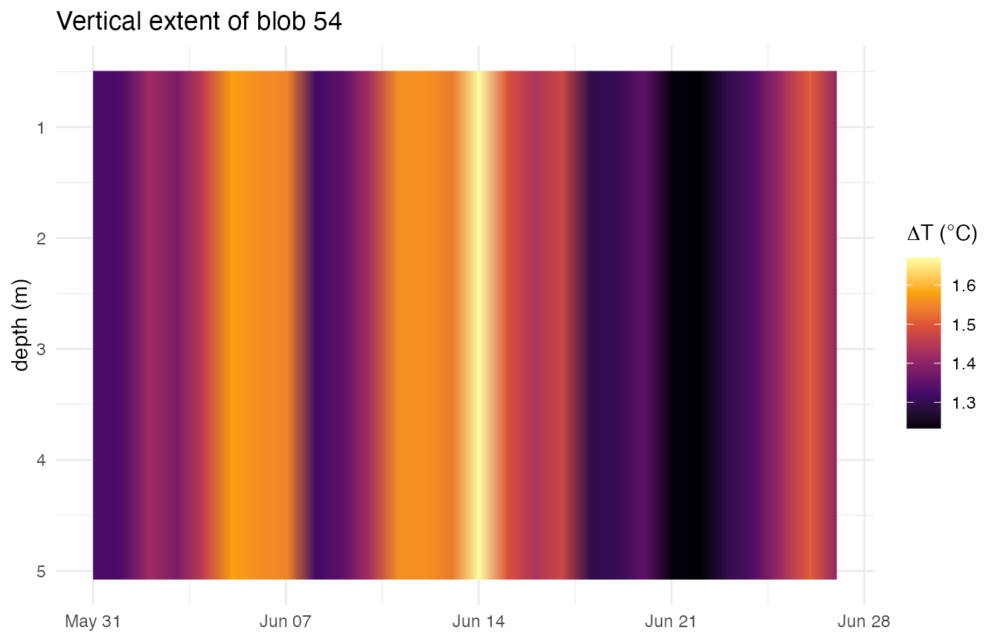
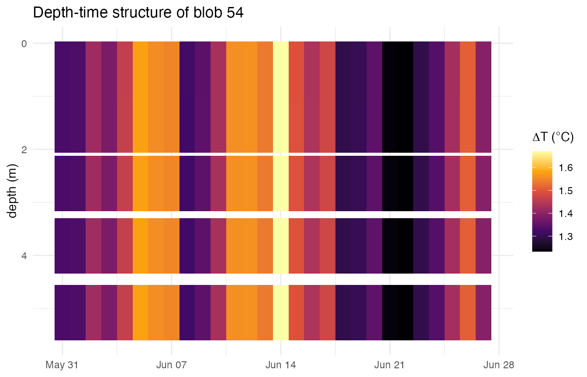

4D blob connectivity: heatwaves through the water column
Source:vignettes/blob-depth-connectivity.Rmd
blob-depth-connectivity.RmdOverview
detect_blob3() finds spatially contiguous marine
heatwave “blobs” by connected-component labelling of the daily
exceedance mask. Given a depth-resolved climatology (from
ts2clm3(depth_range = ...), see
vignette("depth-range")), it now does this natively in 4D:
a voxel connects to its neighbours in longitude, latitude, depth,
and time, instead of just the first three. No new argument is
needed – exactly like detect_event3() and
category_daily3(), detect_blob3() reads the
depth range straight off clim_file and switches to 4D
connectivity automatically.
Connectivity is by depth index, not a depth range. A voxel connects to whichever level is immediately above or below it – level 3 to level 4, say – regardless of how many metres apart those levels actually are. There is no minimum/maximum vertical gap or distance threshold: two voxels one level apart always connect if both exceed the threshold that day; two voxels separated by an empty level in between never do, however close together in metres those levels happen to be. This mirrors exactly how the existing lon/lat/time connectivity already works (adjacent index, not adjacent degrees or adjacent days-within-some-window).
This vignette uses the small 2x2 pixel, 5 depth-level GLORYS fixture
bundled with the package
(system.file("extdata/glorys_depth_test.nc", package = "heatwave3")).
The trade-off: with only 4 horizontal pixels, this fixture can’t show
interesting spatial footprints. What it can show clearly is the
vertical structure this section adds – a blob’s footprint
growing and shrinking through the water column over its lifetime.
library(heatwave3)
library(ggplot2)
f <- system.file("extdata/glorys_depth_test.nc", package = "heatwave3")Detecting depth-connected blobs
First, a depth-resolved climatology covering all 5 levels in the fixture (0.49-5.08 m):
stem <- file.path(tempdir(), "mhw4d")
ts2clm3(f, name = stem,
climatologyPeriod = c("1993-01-01", "2019-12-31"),
depth_range = c(0, 10),
quiet = TRUE)Show console output
#> Reading SST data from /private/var/folders/3w/nmplbnm109b9903rx8z9q0kc0000gn/T/RtmppsylXt/temp_libpathec9b4aa2cdfa/heatwave3/extdata/glorys_depth_test.nc...
#> Grid: 2 lon x 2 lat x 5 depth x 11688 time = 20 pixels
#> Computing climatology with 1 thread(s)...
#> 1/20 pixels (5%) 2/20 pixels (10%) 3/20 pixels (15%) 4/20 pixels (20%) 5/20 pixels (25%) 6/20 pixels (30%) 7/20 pixels (35%) 8/20 pixels (40%) 9/20 pixels (45%) 10/20 pixels (50%) 11/20 pixels (55%) 12/20 pixels (60%) 13/20 pixels (65%) 14/20 pixels (70%) 15/20 pixels (75%) 16/20 pixels (80%) 17/20 pixels (85%) 18/20 pixels (90%) 19/20 pixels (95%) 20/20 pixels (100%)
#> Writing climatology to /var/folders/3w/nmplbnm109b9903rx8z9q0kc0000gn/T//RtmpcgeYwU/mhw4d_clim.nc...
#> Done.detect_blob3() picks up the depth dimension from
stem_clim.nc automatically:
blobs <- detect_blob3(f, paste0(stem, "_clim.nc"),
minVoxels = 1,
return = c("event", "daily", "voxel"))
nrow(blobs$event)
#> [1] 412event and daily both gain depth/volume
columns; voxel gains a depth column:
names(blobs$event)
#> [1] "blob" "duration" "date_start"
#> [4] "date_end" "date_peak" "cumI_km2_day"
#> [7] "peakArea_km2" "meanArea_km2" "centroid_lon"
#> [10] "centroid_lat" "depth_min_m" "depth_max_m"
#> [13] "totalVolume_km3" "peakVolume_km3" "meanVolume_km3"
#> [16] "depthOfPeakIntensity_m" "rank"
names(blobs$daily)
#> [1] "blob" "t_idx" "area_km2"
#> [4] "mean_delta" "max_delta" "centroid_lon"
#> [7] "centroid_lat" "lon_min" "lon_max"
#> [10] "lat_min" "lat_max" "n_cells"
#> [13] "volume_km3" "depth_min_m" "depth_max_m"
#> [16] "depth_at_max_delta_m" "date"depth_min_m/depth_max_m are each blob’s
vertical bounding box over its whole lifetime;
totalVolume_km3/peakVolume_km3/meanVolume_km3
are the volumetric analogues of the existing
cumI_km2_day/peakArea_km2/
meanArea_km2 area metrics (volume = area x vertical layer
thickness, summed over the depth levels a blob occupies that day);
depthOfPeakIntensity_m is the depth at which the single
most intense day of the blob’s life occurred. rankBy
accepts the volume metrics too when the input is depth-resolved:
top <- detect_blob3(f, paste0(stem, "_clim.nc"),
topN = 5, rankBy = "totalVolume_km3", return = "event")
top$event[, c("blob", "rank", "duration", "depth_min_m", "depth_max_m",
"totalVolume_km3")]
#> blob rank duration depth_min_m depth_max_m totalVolume_km3
#> 1 54 1 28 0.494025 5.078224 39.29278
#> 2 67 2 22 0.494025 5.078224 35.64613
#> 3 85 3 24 0.494025 5.078224 34.02462
#> 4 390 4 23 0.494025 5.078224 33.61934
#> 5 291 5 24 0.494025 5.078224 33.60915How much does depth connectivity actually change?
The direct way to see the effect: for how many blobs does the
vertical bounding box span more than a single level
(depth_min_m != depth_max_m)? If depth connectivity did
nothing, this would always be zero – every blob would be confined to the
one level it was seeded on.
spans_multiple <- blobs$event$depth_min_m != blobs$event$depth_max_m
mean(spans_multiple)
#> [1] 0.9660194
sum(spans_multiple)
#> [1] 398On this fixture, the large majority of blobs span more than one depth level – voxels at adjacent levels are genuinely being unioned into shared blobs, not kept artificially separate per level.
Visualising a blob’s vertical extent over time
Pick one blob and look at how its depth range and volume evolve day
by day, using the daily table:
b <- top$event$blob[1]
dd <- blobs$daily[blobs$daily$blob == b, ]
range(dd$date)
#> [1] "1999-05-31" "1999-06-27"
ggplot(dd, aes(x = date)) +
geom_ribbon(aes(ymin = depth_min_m, ymax = depth_max_m, fill = mean_delta)) +
scale_y_reverse(name = "depth (m)") +
scale_fill_viridis_c(name = expression(Delta*"T (" * degree * "C)"), option = "inferno") +
labs(title = paste("Vertical extent of blob", b), x = NULL) +
theme_minimal(base_size = 11)
Any day where the ribbon narrows (or a depth level briefly drops out entirely) is a day the blob temporarily loses part of its vertical extent – some level’s exceedance broke the connection to the surface (or the deep levels) that day, then reconnected once conditions there crossed the threshold again. Note that in this example however there are no missing values.
Depth-time structure of a single blob
The voxel table gives the full per-voxel footprint,
which – aggregated across this fixture’s 5 horizontal pixels since
they’re not the interesting axis here – makes a genuine depth-time
“Hovmoeller” view of one blob’s water column:
vox <- blobs$voxel[blobs$voxel$blob == b, ]
agg <- aggregate(delta ~ date + depth, data = vox, FUN = mean)
ggplot(agg, aes(x = date, y = depth, fill = delta)) +
geom_tile() +
scale_y_reverse(name = "depth (m)") +
scale_fill_viridis_c(name = expression(Delta*"T (" * degree * "C)"), option = "inferno") +
labs(title = paste("Depth-time structure of blob", b), x = NULL) +
theme_minimal(base_size = 11)
The gaps (white tiles) are days/levels that didn’t exceed the threshold that day and so aren’t part of the blob – exactly the same days visible as notches in the ribbon plot above, just resolved to the individual level rather than a min/max envelope. Note however that for this example there are no gaps, the distance between the tiles is due to the increasing size of the depth layers.